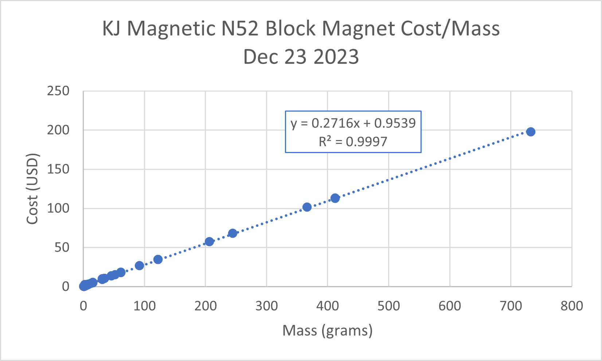
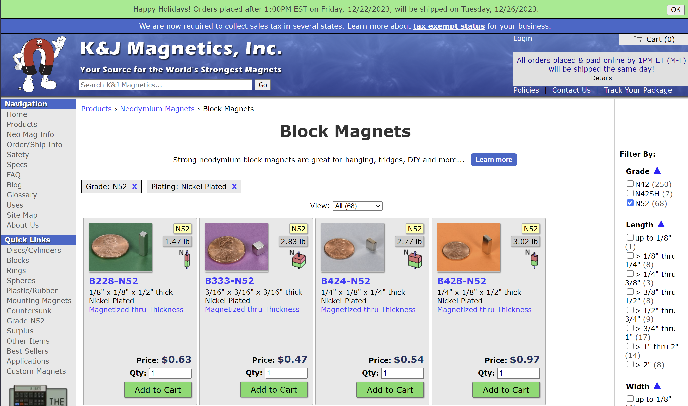
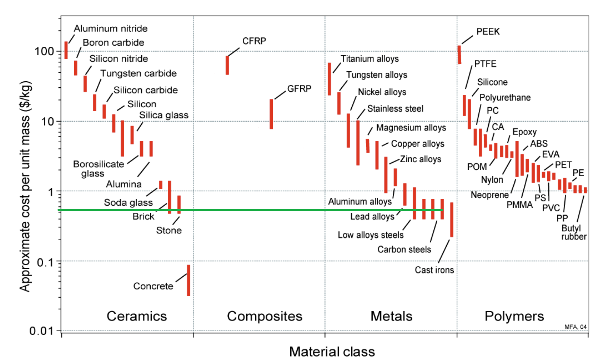

Prices of common motor materials
Updated 12-23-2023
N52 Neodymium Magnet Cost Per Gram
Data in figure below was collected (:-) by hand) from www.kjmagnetics.com.Spreadsheet Link. Magnet prices can depend heavily on pricing of rare earth elements which have macro-economic trends. This price also likely has processing, storage, and other overhead costs included. Inflation due to governmental/central bank control over currency will also impact these numbers in the long term.
 Steel Cost Per Gram
For a generic material like steel, Ashby charts and this chart are useful. Cost is conservatively ~1$/kg or 0.001$/g. In other words, aside from machining cost, the magnets themselves should be the primary driver of the permanent magnet component of a motor.
